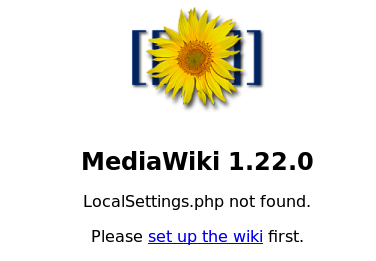
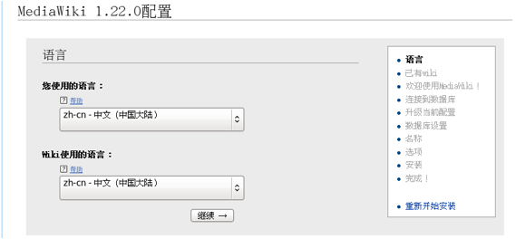
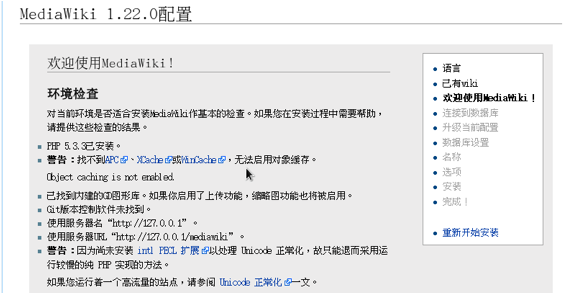
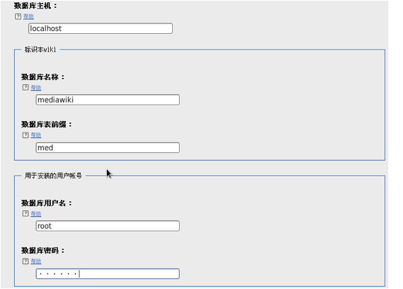
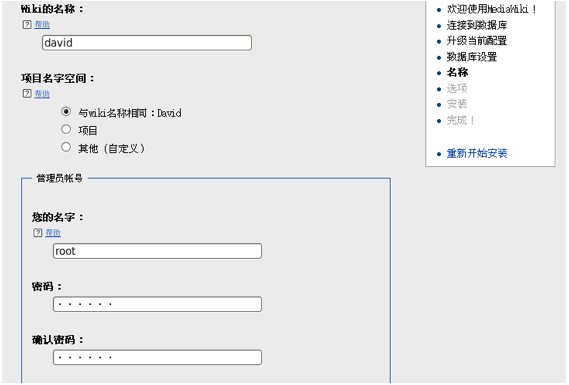

Mediawiki
Mediawiki是一个强大的维基软件，可以实现页面编辑、图像和多媒体管理。
1、下载mediawiki软件（https://www.mediawiki.org/wiki/News）
2、为mediawiki-1.22创建一个自己的数据库，我们起名为“mediawiki-1.22”
3、将mediawiki安装包解压到apache的网页根目录“/var/www/html/”
|
|
4、安装。在浏览器输入地址“127.0.0.1/mediawiki”，开始安装
1）提示“localsetting.php not found”，点击“set up the wiki”

2）选择语言

3）检测环境，如果有严重问题，那么需要提前解决。可以看到下图中，缺少pecl扩展。

4）设置数据库

5）设置管理员

6）安装完成。最后会生成一个“localsettings.php”这是mediawiki的配置文件，我们要将这个文件保存到mediawiki的工作目录
|
|
7）在浏览器输入“127.0.0.1/mediawiki”，就可以访问mediawiki主页
Copyright@david zhytwj2018@163.com